\(\newcommand{\R}{{\mathbb{R}}}\) \(\newcommand{\Z}{{\mathbb{Z}}}\) \(\newcommand{\N}{{\mathbb{N}}}\) \(\newcommand{\var}[1]{{\color{red}{\mathbf{#1}}}}\) \(\newcommand{\param}[1]{{\color{blue}{#1}}}\) \(\newcommand{\mathsc}[1]{{\normalfont\textsc{#1}}}\) \(\def\sc#1{\dosc#1\csod}\) \(\def\dosc#1#2\csod{{\rm{#1{\rm\small #2}}}}\) \(\newcommand{\set}[1]{{\sc#1}}\) \(\newcommand{\mathvar}[1]{\var{#1}}\) \(\newcommand{\mathpar}[1]{\param{#1}}\) \(\newcommand{\half}{{\small{\frac{1}{2}}}}\)
12. Objectives in optimization models¶
12.1. Feasibility problems (no objective function)¶
Sometimes it is not required to optimize any objective, but it is sufficient to check if a set of constraints admits a feasible solution. It is in particular required that a feasible solution is returned, or, otherwise, a proof is given that the feasible set is empty.
As an example, in a scrap blending example it might be useful to know if it is possible to get a blend with given chemical characteristics. An easy way to cast a feasibility problem into an optimization one is to add an objective function which is constantly equal to \(0\):
This problem admits optimum (with value 0) if and only if the original problem is feasible. However if the problem is not feasible, there would be no cues on the reason for infeasibility. By this, we mean an indication of a set of constraints which could not be satisfied. For example, in a blend problem, we might have required too small a percentage of Iron.
It might be useful in these cases to model an auxiliary problem (so called Phase I optimization problem) whose aim is exactly that of checking feasibility. By the way, this auxiliary problem is very often automatically formulated and solved by optimization algorithms when an initial feasible solution is not readily available.
Consider a generic feasibility problem (here we present the case of a system of linear equations and non negativity constraints, but generalizations are possible quite simply):
It is assumed, without loss of generality, that \(\param{b} \geq 0\). If this were not the case, a simple multiplication of both sides of the corresponding equation by \(-1\) would restore this assumption. This feasibility problem can be converted into an optimization one through the insertion of a set of non negative slack variables whose sum is penalized in the objective function:
Here \(\mathbf{1}\) is an array whose elements are all equal to 1. It can be proven that this linear optimization problem always admits an optimal solution. Moreover the objective function is equal to zero if and only if the original set of constraints is feasible. Thus, if the optimization returns a solution with value \(0\), the \(\var{x}\) vector at the optimal solution is an example of a feasible solution. Otherwise, if the optimum value is positive, it can be proven that the original system is not feasible. Non zero values of the slack variables in the optimal solution might be interpreted as a possible cause of infeasibility, although their interpretation is usually not easy.
A problem connected with this situation consists in finding a minimum set of constraints whose relaxation (or whose elimination) would make the problem feasible. This is indeed a widely studied optimization problem with high computational complexity. A related problem is that of finding minimal irreducibly inconsistent subset of constraints, i.e. a minimal set of constraints which are inconsistent (their intersection is the empty set). A standard reference for this research topic is [Chinneck and Dravnieks, 1991], although in recent years many papers appeared on this subject.
12.2. Multiple Objectives¶
At the opposite extreme of the previous case (no objectives) we analyze here the case of optimization problems in which more then one criterion has to be “optimized”. From a formal point of view, an optimization problem with multiple objectives is not well defined. The reason is related to the fact that Euclidean spaces whose dimension is greater than 1 lack a total ordering and, therefore, it is in general impossible to compare different feasible solutions with respect to multiple optimization criteria.
Consider, as an example, an assignment problem in which there are two different criteria on which matching decision should be taken: the preferences expressed by each person on the different tasks, but also a cost which, e.g., might be the time needed to train each person for each of the available duties. An example of simplified data is contained in the following code fragment:
set ORIGINS := A B C D E F G;
set DESTINATIONS:= Job1 Job2 Job3 Job4 Job5 Job6 Job7;
#Preferences - 1: most preferred, 7 least preferred
param Cost1: Job1 Job2 Job3 Job4 Job5 Job6 Job7 :=
A 5 3 1 4 7 6 2
B 5 4 7 2 1 3 6
C 1 3 5 4 6 2 7
D 7 1 5 3 4 6 2
E 2 4 3 1 5 7 6
F 5 6 7 1 4 2 3
G 3 4 7 5 6 2 1;
#Training time
param Cost2:
Job1 Job2 Job3 Job4 Job5 Job6 Job7 :=
A 3 4 4 3 3 2 5
B 3 1 2 2 3 3 2
C 2 5 4 2 2 1 1
D 3 3 5 1 2 3 3
E 1 4 4 4 3 2 5
F 3 5 2 5 5 4 3
G 1 3 4 4 3 5 5;
In this data-file there are two cost matrices. The first one refers to preferences: worker A prefers Job3, while the second choice is Job7 and the least desirable one is Job5.
The second cost matrix reports training time. In order to train A to perform Job3 4 days are necessary, while 5 would be required for Job7; training A for Job5 however would require only 3 days.
So it is evident that the two objectives, minimizing the total preference index and minimizing the total training time are partially conflicting. In fact, optimizing the first objective, the following assignment is obtained:
If we optimize instead the total training time, the following is obtained:
If we consider both criteria, then it is not possible to choose between these two options, although they are quite radically different one from the other. Even without resorting to these extreme solutions, in some cases it is not possible to decide which one is preferable. If we assigned jobs in the order 3, 2, 6, 4, 5, 7, 1 we would obtain a cost of assignment 21 and a training time 14: neither preferable not discardable with respect to the solution presented before. However, if the assignment were, in the order, 7, 4, 6, 5, 1, 2, 3, we would obtain a cost of assignment 25 and a training time 21: both costs are worse then the above solution. Thus we can, without any doubt, avoid taking this solution into consideration, as it is less appreciated and also requires more training time with respect to another feasible assignment.
The presence of many objectives is quite frequent in applications. For example, in production problems, it is often required to plan production at the least possible cost while maximizing a quality index. In environmental management problems it is frequent the case in which two conflicting objectives must be optimized: an economic objective corresponding to cost minimization and an environmental one, such as, for example, risk minimization. (e.g., for the transport of dangerous and polluting substances).
We can formalize the ideas behind this example as follows. Consider the multi-objective problem
where we would like to simultaneously minimize more than one function \(f_1, f_2, \dots, f_k\).
It is reasonable to limit the search of solutions to non dominated or Pareto ones. We say that a feasible solution \(\var{y}\) is (weakly) dominated by another feasible solution \(\var{x}\), if
The solution \(\var{y}\) is (strongly) dominated by \(\var{x}\) if, besides being weakly dominated, there exists at least one index \(\bar{\jmath}\) such that
A solution is Pareto optimal if it is not dominated by any other, i.e., if no other feasible solution exists for which every objective is at least as good as this one, and, in at least one case, strictly better.
The Pareto condition can be graphically represented in the case of problems with two objectives. Consider the following elementary artificial bi-objective problem:
The feasible set is a polyhedron whose vertices are \((0,0,0), (1,0,0), (0,1,0), (0,0,1), (1,1,1)\) and which can be represented as follows:
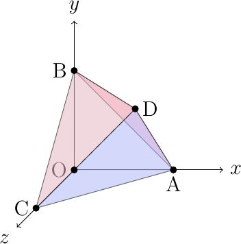
Mapping each feasible solution to the 2-dimensional space of the two objective functions, the following set of objective values is obtained (we denoted by \(P^\prime\) the image of a feasible point \(P\)):
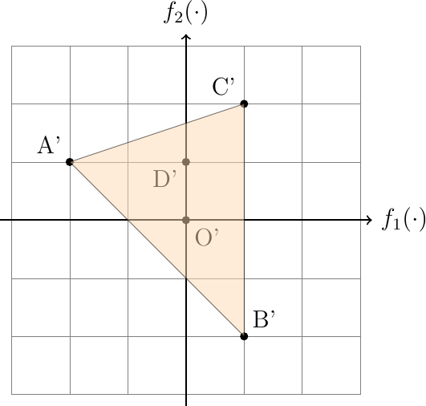
It might be proven that when both the objectives and the constraints are linear, then the image of the feasible set in the space of objectives is a polyhedron. Besides, the vertices of this polyhedron are the images of some of the vertices of the feasible set. From this picture it is immediately seen that vertex \(C\) is not Pareto optimal, as it is, as an example, dominated by each of the remaining vertices. However, also vertex \(O\) is not Pareto, although no other vertex dominates it; it is in fact dominated, e.g., by point \((1/2,1/2,0)\), whose objective function values are \((-1/2,-1/2)\). Graphically, in the space of objectives, Pareto solutions are those feasible points whose image is characterized by the absence of other image points in the bottom-left quadrant:
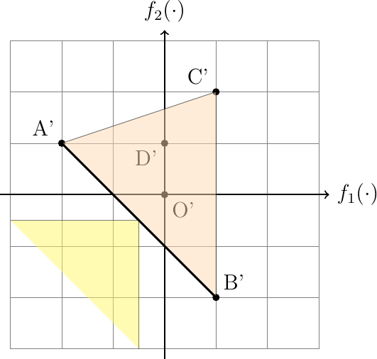
From this it can be readily understood that the image in the space of objectives of Pareto solutions is a subset of the frontier, called efficient frontier. In the example above the efficient frontier is outlined in bold and the set of Pareto optima is the edge \((A,B)\) of the feasible set.
Many software tools exist for solving multi-objective problems; frequently they are capable of generating, sometimes in a partially interactive way, some or even all Pareto solutions.
A simple way to generate some solutions to multi-objective problems consists in reducing the problem to one with a single objective.
A first possibility, useful only at an initial stage of the analysis, consists in optimizing each of the objectives in turn, disregarding all of the others; this optimization phase consists of an exploration of the most extreme solutions. In the example above, \(A\) and \(B\) minimize, respectively, the first and the second objective. In the assignment example before, the two extreme solutions correspond one to the assignment value of 8 and training time 25, while the other gives the assignment index 35 with a training time 11, as we have seen before. These solutions are usually Pareto (unless a different solution, with the same value of the optimized objective exists for which a better objective exists with respect to the remaining ones).
Usually these solutions are not satisfactory, since they completely neglect the presence of multiple objectives. In problems like this one, characterized by linear, and thus convex, constraints, any convex combination of feasible solution is feasible. Thus it is possible to generate a family of solutions by combining Pareto optimal ones. As an example, taking a convex combination of the two extreme solutions in the geometrical example above we obtain the set
which corresponds to edge \((A,B)\) and, in this case, is the set of Pareto optimal solutions. The situation is slightly different in the assignment example, as the feasible set is no more convex: in fact, although integrality is granted when optimizing a linear objective function, it must be recalled that the feasible set is composed of binary solution and, thus, a linear combination of feasible solution is not feasible in general.
A second possibility to tackle multi-objective problems, related to the previous one but somewhat less radical, consists in optimizing a single objective in turn, as before. However, now all the other objectives are included as constraints. In particular, an objective to be minimized becomes a \(\leq\) constraint; the right hand side might be chosen based on the results obtained in the optimization of that single objective.
In the geometrical example given above, considering that the minimum value for the second objective is \(-2\), solving:
for different positive values of \(\varepsilon\) would produce several compromise solutions.
In the example on assignment, considering the extreme solution with assignment values 8 and 25, we might optimize the total training time, imposing that the assignment index is, say, at most 9. In this case an assignment with values 9, 22 is obtained. Increasing the right hand side for the first objective to 12, a solution with objectives 12,19 is obtained, which seems to be quite a good compromise. This way a set of interesting solutions can be automatically built and proposed to the decision maker.
Another possibility, which becomes particularly reasonable when the different objective functions share the same unit of measurement and, possibly, the same range of values, is to build a surrogate objective function through a linear combination:
where the non negative coefficients \(\param{\lambda}_j\) can be chosen to reflect the different importance of the objectives and to span the set of feasible solution to generate several candidates.
Finally, another possibility is to use a goal programming approach, consisting in choosing non negative constants \(\lambda_j\), exactly as in the previous approach, and solving
In this approach we seek for a compromise solution by “pushing” the right hand sides as much as possible towards low values. It can be proven that this approach is in a sense equivalent to the previous one.
13. Some nonlinear problems that can be transformed into linear ones¶
There exists a tiny set of non linear optimization problems which, thanks to sometimes rather ingenious tricks, can be transformed into equivalent linear ones. These few cases are extremely important, as they correspond to a large and very interesting set of possible applications.
13.1. Minimax problems¶
Consider the optimization problem
This is a nonlinear problem and, frequently, a non smooth one. By this we mean that it is not granted that the objective function is everywhere continuously differentiable, even if each of the single functions is. Even in the linear case, differentiability is in general lost and the objective is piece-wise linear.
Minimax models can be seen as another way to tackle multi-objective optimization problems: in order to simultaneously minimize multiple objectives, here we minimize the pointwise worst one. If we associate to each feasible solution a point in the space of objective function values whose coordinates are the values of individuals objectives, the minimax approach corresponds to finding a feasible solution which corresponds to the minimal \(\ell^\infty\) norm of the objective function values.
Consider as a simple illustrative problem the following one:
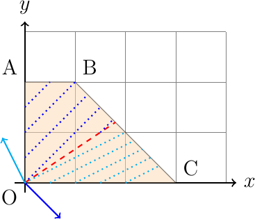
In the figure above we report the feasible set, a few level curves of the objective function and the gradients of the two components of the objective functions (we recall that the gradient of a function points towards increasing levels and is normal to the level curve). Along the dashed red line, which corresponds to the set on which the two objectives have the same value, the objective function is non differentiable.
It is possible to transform the minimax problem into an equivalent one, according to the following scheme. We first introduce an auxiliary real variable \(\var{z}\) and re-write the problem in the following equivalent form:
where the nonlinearity of the objective function has been simply transferred into a constraint. Recalling the definition of the maximum of a finite set of numbers we can relax the above problem as:
This is indeed a relaxation as the requirement \(\var{z} \geq f_{i} (\var{x})\) is necessary but not sufficient for \(\var{z}\) to be the maximum of the \(k\) functions: it is in fact lacking a required constraint which forces \(\var{z}\) to be exactly equal to at least one of the \(k\) functions. In other words, the constraints correctly model only the requirement
Therefore feasible solutions might exist in which the value of \(\var{z}\) is strictly greater than the maximum of the objectives.
However it is easy to show that the model is indeed correct when the optimal solution is considered. In fact, assume that an optimal solution \((\var{x}^\star,\var{z}^\star)\) has been found and that
In this case, since no other constraint is imposed on \(\var{z}\) it would be possible to find another solution \((\var{x}^\star,\var{z}^\star-\varepsilon)\) with \(\varepsilon >0\) which is still feasible but with a lower value of the objective function. But this is absurd, as it was assumed that the solution was indeed optimal.
When both the objective functions and the constraints are linear, this transformation reduces the problem to a linear optimization one. Following a very similar set of transformation, it is very easy to see how also maximin problems can be transformed into equivalent ones.
It is however not possible to use the same technique to transform minimin or maximax problems, as the objective function will not anymore “push” the auxiliary variable against one of the objective functions. Apparently this case would require the use of disjunctive (logical OR) constraints to model the fact that the auxiliary variable needs to be equal to one of the functions. However, in these special cases, it is quite easy to solve the problem anyway. In fact, e.g., for a minimin problem, we can minimize each single function and return the optimal solution associated with the minimum of the minima found. Thus the problem can be solved by finding the optimal solution to \(k\) problems
and returning \(\min_i z_i^\star\) as the optimal value.
Minimax problems (and the others discussed here) have many applications. As a simple example, most taxation systems define the amount to be paid as a piece-wise linear function with increasing slopes: this rule follows the general principle that not only those who have more should pay more taxes, but the marginal increase of taxes to be paid should be greater than that of lower income persons. The taxation rate for Italian income in fiscal year 2021 is represented in the following graph:
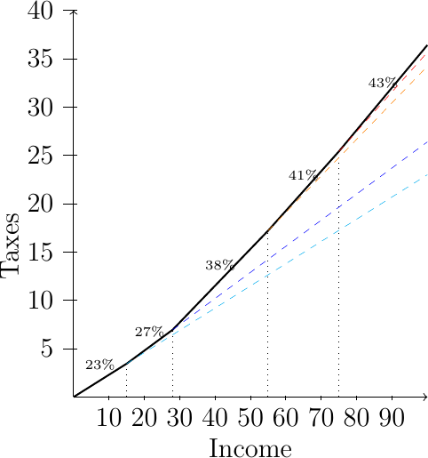
It can be readily seen that the function corresponding to the 5 increasing slopes in the above graphical representation might be obtained as the pointwise maximum of 5 straight lines.
In order to model generic piece-wise linear convex cost functions, it is possible to slightly generalize the above approach. Let \(c_1^T \var{x}+a_1, c_2^T \var{x} + a_2,\dots, c_k^T \var{x} + a_k\) be \(k\) affine functions. Then the piece-wise linear objective function can be modeled as
- application:
Fair assignment
The problem of fair assignment has been already introduced in chapter Assignment or bi-partite matching. The mathematical formulation is the following:
\begin{align*} \min_{\var{f}} \, \max_{\substack{(i, j) \in \\ \set{E}}} \{\param{Cost}_{ij} \var{f}_{ij} \} & \\ \sum_{i: (i,j) \in \set{Arcs}} \var{f}_{ij} & = 1 & \forall\,j \in \set{V}\\ \sum_{j: (i,j) \in \set{Arcs}} \var{f}_{ij} & = 1 & \forall\,i \in \set{V} \\ \var{f}_{ij} & \in \{0,1\} & \forall\, (i,j) \in \set{E} \end{align*}This problem is also known as the Bottleneck Assignment problem. Using the transformation just presented, the problem can be equivalently written as
\begin{align*} \min \var{z} & \\ \var{z} & \geq \param{Cost}_{ij} \var{f}_{ij} & \forall\, (i,j) \in \set{E}\\ \sum_{i: (i,j) \in \set{Arcs}} \var{f}_{ij} & = 1 & \forall\,j \in \set{V}\\ \sum_{j: (i,j) \in \set{Arcs}} \var{f}_{ij} & = 1 & \forall\,i \in \set{V} \\ \var{f}_{ij} & \in \{0,1\} & \forall\, (i,j) \in \set{E} \end{align*}This formulation, although linear, has also integrality requirements on the main variable which cannot be canceled, as the problem is no more a network flow one and, indeed, solving the continuous relaxation usually produces fractional solutions. It might be observed that this problem can be efficiently solved by specialized algorithms; however this linear representation does not enjoy the integrality property.
- application:
Zero-sum games
An application, strictly linked with the birth of duality theory is connected with non cooperative zero-sum games (see, e.g., [von Neumann and Morgenstern, 1944]). The example we will be using in this presentation is related to a children game, the “Chinese morra”, but the resulting model is quite general. Assume there are two players, denoted by R and C (these names are linked to the Rows and Columns of a matrix we will introduce shortly). The two players, simultaneously and without any communication, choose one out of \(n\) (3, in our example) possible “moves”:
\(r\) (Rock)
\(p\) (Paper)
\(s\) (Scissor)
and the general rule is that Rock wins over Scissor, but loses with Paper, while Paper loses with Scissor. If the moves chosen by the two players are different, one of the two players wins; otherwise, if they both choose the same move, there is a tie. In a standard game, players just count the number of wins and losses. It is easy to imagine, although this can be formally proven, that in the standard case no player has an advantage over the other. The “best” strategy of both players is to choose, uniformly, a move at random. However we might think of a variant of the game in which the amount to win or lose in a game depends on the chosen moves. As an example, consider the following matrix:
\begin{align*} Q & = \begin{array}{c|rrr} & r & p & s \\ \hline r & 0 & 1 & -3 \\ p & -2 &0 & 5 \\ s & 6 & -4 & 0 \\ \hline \end{array} \end{align*}This matrix is called payoff matrix and it has the following interpretation: assume player R chooses row \(i\) in the matrix and player C chooses column \(j\). Then player R will “loose” an amount \(\param{Q}_{ij}\), while player C will “gain” the same amount. When a gain is negative, it is indeed a cost and when a loss is negative, it corresponds to a gain. As an example if player R chooses Rock and player C chooses Scissor, R will win 3, while C will loose 3. If R chooses Rock and C chooses Paper, then R will loose 1 and C will gain 1.
A strategy for player R is defined as a vector \(\var{x} \in \R^n\) such that
\begin{align*} \sum_{i=1}^n \var{x}_i & = 1 \\ \var{x}_i & \geq 0 & \forall\, i=1,n \end{align*}A strategy for the second player can be defined in a totally analogous way. A strategy is thus defined as the choice of a discrete probability distribution. Given a strategy, a player will decide a move based on a random sampling from the chosen distribution. A pure strategy (also called a deterministic strategy) is given by a binary strategy vector. In other words, in a pure strategy we choose, with probability one, a specific move, without any randomization.
In order to analyze a possible way to build a rational strategy, assume, for the moment, that player C is in the best possible condition, i.e., that player C knows the strategy of player R, \(\bar{x}\). Thus, we can evaluate the expected gain of player C, depending on the chosen strategy \(\var{y}\), as
\begin{align*} \var{y}_1 (\sum_i \bar{x}_i \param{Q}_{i1} ) + \var{y}_2 (\sum_i \bar{x}_i \param{Q}_{i2} ) + \cdots + \var{y}_n (\sum_i \bar{x}_i \param{Q}_{in} ) \\ = \bar{x}^T \param{Q} \var{y} \end{align*}and the best option for player C will be the one which solves the following optimization problem (where with \(\mathbf{1}\) we denote a vector of suitable dimension whose components are all equal to one):
\begin{align*} \max_{\var{y}} \bar{x}^T \param{Q} \var{y} & \\ \mathbf{1}^T \var{y} & = 1 \\ \var{y} & \geq 0 \end{align*}This is a standard linear optimization problem with a single equation. A basic optimal solution thus will have a single non zero variable which will be necessarily equal to 1. The optimal solution would be, therefore, a pure deterministic strategy with value:
\begin{align*} \max \{\bar{x}^T \param{Q}_1, \bar{x}^T \param{Q}_w, \ldots, \bar{x}^T \param{Q}_n \} \end{align*}Here \(\param{Q}_j\) denotes the \(j\) –th column of the payoff matrix. Going back to the best strategy for player R (rows), we can now assume that this player will try to minimize the expected loss incurred in the worst possible case, i.e. when the adversarial discovers the strategy of the player. This approach corresponds to a cautious strategy which tries to obtain the best possible result in the worst possible scenario. It is quite frequently used in games against an intelligent opponent. Given this assumption on the objective of the R player, we would like to solve the optimization problem
\begin{align*} \min_{\var{x}} \max \{\var{x}^T \param{Q}_1, \var{x}^T \param{Q}_w, \ldots, \var{x}^T \param{Q}_n \} & \\ \mathbf{1}^T \var{x} & =1 \\ \var{x} & \geq 0 \end{align*}and this problem is easily recognized to belong to the class of minimax problems we analyzed in this chapter. Thus, as we have already seen, the best strategy of the R player can be found, equivalently, by solving the linear optimization problem:
\begin{align*} \min_{\var{x},\var{z}} \var{z} \\ \var{z} & \geq \var{x}^T \param{Q}_j & j=1,n \\ \mathbf{1}^T \var{x} & = 1\\ \var{x} & \geq 0 \end{align*}A simple implementation of this model follows:
game.mod¶set ACTIONS; param Payoff{ACTIONS, ACTIONS}; var z; var x{ACTIONS} >=0; minimize RowLoss: z; s.t. MinMax{j in ACTIONS}: z >= sum{i in ACTIONS} x[i] * Payoff[i,j]; s.t. Normalization: sum{i in ACTIONS} x[i] = 1;Consider the data of the current example:
game.dat¶set ACTIONS := r p s; param Payoff: r p s := r 0 1 -3 p -2 0 5 s 6 -4 0 ;Solving the problem we get the following optimal strategy for player R:
\begin{align*} x_p & = 33,6449\% \\ x_r & = 54.2056\% \\ x_s &= 12.1495\% \end{align*}with an objective function value \(0.05607476636\). This means that the game is not balanced and even with the best possible strategy (in the minimax sense) the R player will incur in a positive expected loss.
It is quite easy to see that the best (maximin) strategy for the opponent, the C player, can be found by following an identical path. And, if this is done, we can discover that the best strategy of the C player is the solution of the dual problem of the linear optimization model faced by the R player. This important result is linked to the birth of duality theory and can be traced back to discussions between the “father” of linear optimization, George B. Dantzig, and the “father” of many scientific achievements, including the modern computer and the modern theory of economic behavior, John von Neumann.
Thanks to this property, the best strategy of the opponent can be easily and immediately found to be
\begin{align*} y_p & = 50.4673 \% \\ y_r & = 34.5794\% \\ y_s &= 14.9533\% \end{align*}The model presented here is extremely elementary and might be extended in many ways. As an example, the payoff matrix needs not be square, as the available actions of the players might differ. There might even exist two different payoff matrices, in the so called non-zero sum games in which the loss of a player is not necessarily equal to the gain of the opponent. There might be more than two players, and there might be different ways to define an “optimal” strategy. Game theory is extremely rich and deep, and it deals with profound concepts like that of equilibrium (Nash equilibria as an example) or cooperative and coalition games. It is however remarkable how everything started from elementary duality in linear optimization models.
13.2. Absolute values in the objective¶
Consider the optimization problem
Here some of the variables, which of course are not constrained to be non negative, appear in the objective in absolute value. Similarly to the previous case of minimax problems, here too the objective function is only piece-wise linear, and in general not everywhere differentiable. In some cases however the problem can be transformed into an equivalent one in which the non linear objective is transformed into a linear one with linear additional constraints.
In order to transform the problem it is worth observing that the function \(| \var{x} |\) can be seen as the pointwise maximum between two linear functions:
Thus, following the same path as in the transformation of minimax problems, the general problem can be represented as
and, introducing an auxiliary variable \(\var{z}_j\) for each \(\var{x}_j\) variable the problem can be rewritten as
Similarly to the minimax case, the constraint associated to the definition of the auxiliary variables can be relaxed, but only under the assumption that the cost coefficients \(c_{j}\) are strictly positive:
or
Equivalence, for the case of positive cost coefficients, can be proven in exactly the same way as we did for minimax problems. If even a single coefficient has a negative sign than the whole model fails to correctly represent the original one and, in general, the problem becomes much harder to solve. We might observe that with positive coefficients the objective function is convex, while if even a single one is negative convexity is lost. Null coefficients of course cause no difficulties as the corresponding variable can be canceled from the objective function.
The same problem can be transformed, under the same assumptions, into a linear optimization one following a different, yet equivalent, path. In generic linear optimization models the standard transformation applied to free variables, i.e., to variables which are not constrained to be non negative, is to replace those variables with the difference of two non negative ones:
The optimization problem can thus be equivalently written as
This substitution transforms the original problem into an equivalent one; however the mapping between solutions in the two feasible sets is not one-to-one: if \(\var{x}_{j} \geq0\) it is always possible to choose
for any choice of \(\mathvar{\Delta}_j \geq0\). If on the contrary, \(\var{x}_{j} \leq0\), it is possible to choose
with \(\mathvar{\Delta}_j \geq0\).
It can be seen that, if \(\mathvar{\Delta}_j = 0\), at least one of the two components, \(\mathvar{x}^+_{j}\) or \(\mathvar{x}^-_{j}\), is \(0\) while the other is equal to \(|\var{x}_{j}|\). It can also be observed thus that the sum of the two auxiliary variables is
Replacing in the objective function each occurrence of \(| \var{x}_{j} |\) with the sum of the components \(\var{x}^+_{j}\) and \(\var{x}^+_{j}\), if, as it was assumed, the cost coefficients are positive, in the optimal solution we will surely have \(\mathvar{\Delta} = 0\).
The model is therefore equivalent to the following:
It is important to recall that if even a single coefficient \(c_{j}\) is negative, the linear model is not correct: the negative cost factor would in this case be an incentive to choose both \(\var{x}^+_{j}\) and \(\var{x}^-_{j}\) as high as possible (leading, in fact, to an unbounded problem).
It is important to observe that the replacement of a free variable with the sum of the two auxiliary ones is done only in the objective, while in all other parts of the model the usual transformation is applied. As an example, the problem
can be transformed into the equivalent linear problem
13.3. Regression (or best approximation) models¶
One of the most important and frequently used applications of numerical optimization consists of the approximation of experimental data with analytical models. The idea of approximating data with a function from a sufficiently rich family of models is quite old and is motivated both by the desire to understand relationships among data and by the need of producing reliable forecasts.
As an example, consider the data represented in the following picture:
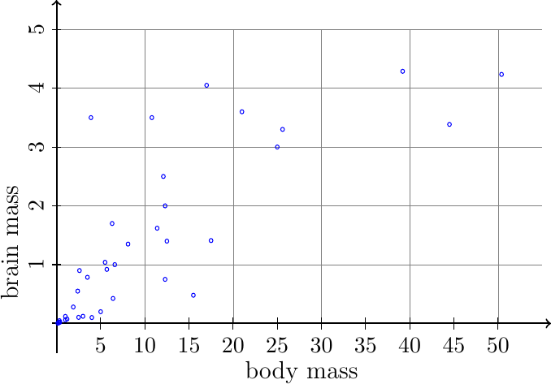
The picture reports a few experimental observations of the mass of the brain versus the body mass in some mammal species. From this picture it is reasonable to assume a correlation between the two masses. We would like to fit a line to the data so as to “minimize” a measure of the error. There are many assumptions to be done in order to frame this problem in a correct way. Let us consider the following picture representing a possible fit to the above data through a linear model \(y = ax + b\):
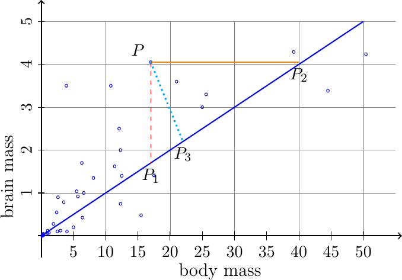
Is the continuous straight line a good model of the observed data? Can we trust it as a plausible explanation of the correlation between brain and body mass? Can we reliably use this line as a predictor for the brain mass of a yet unseen mammal? The answer to these question is not easy in general. The first important problem to be solved is how to measure the error between an experimental data and an approximation function; this is fundamental as this definition will guide towards different possible “best” approximation models. Assume the simplest possible model, an affine function:
where \(\var{a}\) and \(\var{b}\) are unknown variables to be determined. Consider a single data point, identified by \(P\) in the above figure. The most frequently used error measure for this data point is the difference between the ordinate of the point and the ordinate of the corresponding point in the approximation line. For linear approximation, if the coordinates of this data point are \((\param{X}_i,\param{Y}_i)\), the error is defined as
In the figure, the absolute value of the error corresponds to the length of the line segment \((P,P_1)\). This error measure is related to the assumption, which is reasonable in many, although not all, cases, that the observations of the independent variable \(\param{X}\) are not affected by measurement errors and therefore, given an observation, the uncertainty is associated just with the ordinate value associated with \(\param{X}\). Of course, this assumption is not always justified: in our example, for every data point, both observations (body mass as well as brain mass) are affected by measurement errors and, therefore, there seems to be no reason why the error with respect to one of the two variables is to be considered differently from the other one. In cases like this one a possibly more reasonable model might be based on a definition of the error as the Euclidean distance between the observation and the regression line. This distance can be easily computed and, in the one-dimensional case, it turns out to be equal to:
(again we are defining the error measure with sign, but usually this value will enter an objective function to be minimized through its absolute value). In the figure above this distance is represented by the length of segment \((P,P_3)\) Another model, although much less frequently used, measures the error along the horizontal axis:
as represented in the figure by the length of segment \((P,P_2)\). In what follows we will use the first of the three error measures reported here, as it is the most common one in practice. However our intent here was to draw the reader’s attention to the many diverse possible choices for this fundamental measure. We observe in passing that also weighted error measures might be considered, one of them being to measure the relative instead of the absolute error, which can be obtained by dividing the classical error measure by \(\param{Y}_i\) (obviously, if non zero).
Once an error measure has been defined, the problem remains of defining an objective function to be minimized. The problem, in fact, is inherently a multi–objective one as we would like to minimize all of the error measures with a single choice of the parameters of the regression line.
Regression models generally assume a parametric model like, e.g., an affine one as just introduced. The parameters of the model can then be chosen solving the problem
where \(N\) is the number of observations made and \(F\) is a function designed to aggregate all of the individual error measures into a single one. As this is indeed a multi-objective problem, some of the techniques presented before might be employed, like that of minimizing a linear combination of the absolute errors. We present here a few of the most interesting approaches for the problem.
13.3.1. Minimax regression¶
If, as an aggregation operator \(F\), we choose the operator \(\max\), in the linear case we are led to the determination of the unknown parameters \(\var{a}, \var{b}\) by solving
This can easily be transformed into a linear optimization problem. In fact, using the transformation just presented for minimax problems, introducing an auxiliary variable we can write
and, thanks to the well known properties of the absolute value, the problem can be transformed in the equivalent linear optimization form
The case just presented is based on linear approximation of univariate data; that is, each observation corresponds to a pair of numerical values, one of which is typically associated with an independent variable, or under the control of the experimenter, while the other one is the actual observation of the phenomenon, and corresponds to the dependent variable.
Nothing prevents us from considering more general models. As an example, it is possible that observations are associated with more than one independent variable. In this case the term multivariate regression is used. Assuming again a linear model, we would like to estimate the parameters of the function
so that an aggregate measure of the error is minimized. For minimax regression, the following general model can be defined:
- model:
Multivariate Minimax Linear Regression
\(\set{L}\): a set of labels associated with data;
\(\param{K}\): the dimension of the “independent variables” (equal to one in the univariate case)
\(\param{X}_{ij}\): value of component \(j \in \{1,K\}\) of the \(i\)-th observation, \(i \in \set{L}\); in the case of simple univariate regression, this is just the abscissa of observation \(i\). As an example, assume we would like to find an approximate relation between the sale price of a security, for example a treasury bill, and other variates, like, e.g., the exchange rate of euro against dollar and the consumer price index (inflation rate); for each time instant \(i\) there will be two observations of “independent” variables, one relating to the Euro / dollar rate, the other to the consumer price index
\(\param{Y}_i\): observed value of the dependent variable, \(i \in \set{L}\); in the example above, this is the observed value of the treasury bill sale price;
\(\var{a}_j\): value of parameter \(j \in \{1,\param{K}\}\) in the linear regression model;
\(\var{b}\): constant term in the linear regression formula
\(\var{z}\): auxiliary variable, necessary for the transformation of the minimax problem into an equivalent linear one;
bounds of the maximum error in the regression:
\[ - \var{z} \leq \param{Y}_i - \sum_{j=1}^{\param{K}} \left (\param{X}_{ij} \var{a}_j + \var{b} \right) \leq \var{z} \]for every \(i \in L\);
minimization of the maximum error:
\[ \min \var{z} \]
An example of implementation of this model for the univariate case is given below:
# linear reression with optimal minimax error
set LABEL ordered;
param Xdata{LABEL};
param Ydata {LABEL};
var a;
var b;
# model Y = a X + b
var zeta;
minimize minimax_regr: zeta;
subject to def_minimax_left {i in LABEL}:
Ydata[i] - (a * Xdata[i] +b) >= -zeta;
subject to def_minimax_right {i in LABEL}:
Ydata[i] - (a * Xdata[i] +b) <= zeta;
and, running this model on the brain mass vs body mass example the following result is obtained, corresponding to \(\var{a}=0.0419847, \var{b}=1.58275\):
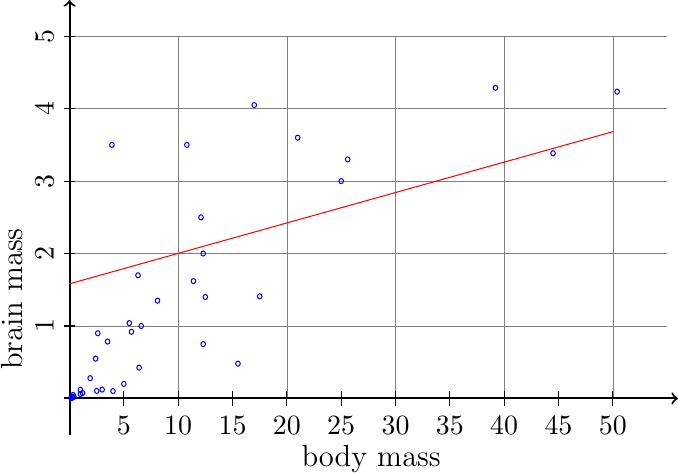
Visual inspection reveals that this approximation is of quite bad quality, with significant errors in most data points.
Minimax (or infinite) regression models minimize the \(\ell^{\infty}\) norm of the error vector and, thus, are very sensitive to “bad” observations or to “outliers”. However, these models have the property of spreading errors quite evenly among the data points, which, in some application, might be a much desired feature.
13.3.2. Absolute regression¶
In absolute or \(\ell^{1}\) regression models the aggregation operator \(F\) is defined as the sum of absolute differences between model prediction and observed data. In the linear univariate case,
An absolute regression model can be formulated as follows, taking into account that sets and parameters are exactly the same as in the minimax regression case:
- model:
Multivariate Absolute Linear Regression
\(\var{a}_j\): value of parameter \(j \in \{1,\param{K}\}\) in the linear regression model;
\(\var{b}\): constant term in the linear regression formula
\(\var{z}_i\): auxiliary variables, \(i \in \set{L}\);
bounds of the maximum error in the regression:
\[ - \var{z}_i \leq \param{Y}_i - \sum_{j=1}^{\param{K}} \left (\param{X}_{ij} \var{a}_j + \var{b} \right) \leq \var{z}_i \]for every \(i \in E\);
minimization of sum of absolute errors:
\[ \min \sum_{i \in \set{L}}\var{z}_i \]
In the following a possible implementation is reported:
# linear reression with optimal absolute error
set LABEL ordered;
param Xdata{LABEL};
param Ydata {LABEL};
var a;
var b;
# model Y = a X + b
var zeta{LABEL};
minimize minimax_abs: sum{i in LABEL} zeta[i];
subject to def_left {i in LABEL}:
Ydata[i] - (a * Xdata[i] +b) >= -zeta[i];
subject to def_right {i in LABEL}:
Ydata[i] - (a * Xdata[i] +b) <= zeta[i];
and, running this model on the brain mass vs body mass example the following result is obtained, corresponding to \(\var{a}=0.108165, \var{b}=0.0479401\):
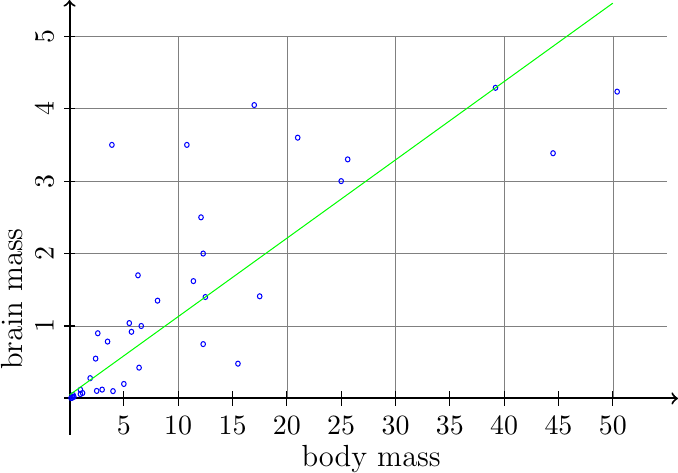
13.3.3. Quadratic (least squares) regression¶
In most cases regression models are estimated by means of least squares or \(\ell^2\) error minimization. In the quadratic or least squares model the aggregation function takes the form:
This is a non linear model, but it is reported here for the sake of comparison with the other regression models presented. Among the reasons for the popularity of this model surely there is the fact that the optimal estimate of parameters \(\var{a}\) and \(\var{b}\) in the linear univariate case can be computed using well known analytical expressions in closed explicit form.
It is not reasonable to use a nonlinear optimization algorithm to fit, e.g., the mass data used in this chapter. However this would be easy to do and might prove useful for more complex cases in which an analytical expression of the optimal parameters is not available. This might happen, e.g., in nonlinear regression, or when constraints are imposed over some of the parameters. The regression line obtained through quadratic regression is somewhat intermediate between the minimax and the absolute one. In fact, the distortion caused by squaring the errors make the resulting line quite sensitive to large errors or to outliers, even if not in an extreme way as in the case of minimax.
The following picture reports the three regression lines for the same dataset. For quadratic regression the optimal parameters turn out to be \(a=0.0916022, b=0.428914\):
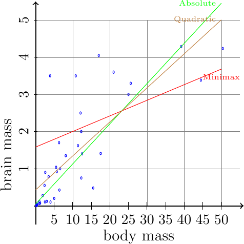
In order to better appreciate the differences between the three regression models just presented, in the following figures histograms of the errors are reported.
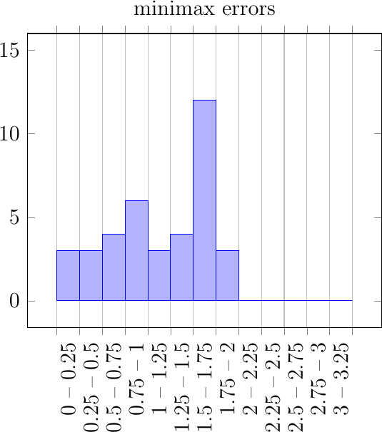
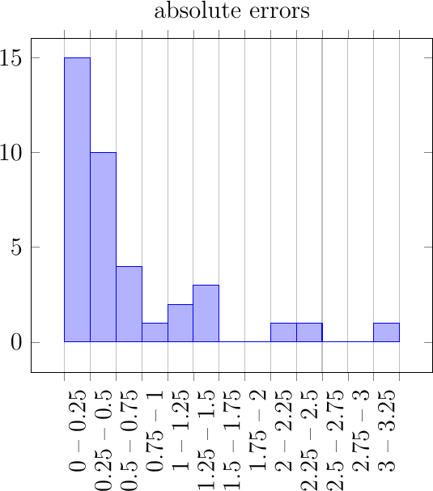
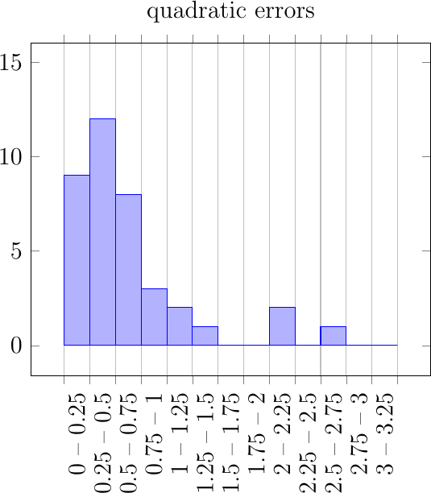
From the above histograms we can observe the expected behavior of different regression models. Minimax regression is characterized by many errors, which, however, are never too large. On the contrary, absolute regression generates a large portion of errors quite close to zero, but in some rare cases produces very large deviations. Quadratic regression is somewhat between these two.
As a final remark on the models presented here it is important to observe that we gave three examples on how to aggregate errors in order to find a regression line. It should not be too difficult to extend these models to more general measures, like percentage errors, or weighted errors, in which some observations need to be estimated more accurately than others. When the independent variable is time, another possibility could be that of discounted errors, i.e., of giving smaller and smaller weight to errors in past observations.
Another aspect which is worth considering is that the ideas presented here extend quite nicely to generic parametric approximation models. If a rich family of functions (a “basis”) is given, non linear regression model might be obtained easily through suitable linear combination of those functions, and the resulting optimization models would still be linear optimization ones (or quadratic in the case of least square regression). Let in fact
be a family of functions. As an example:
(for polynomial regression). Then a regression model can be obtained through linear optimization by solving
More advanced modeling might be employed to obtain sparse regression models (i.e., models with a small number of non zero \(\var{\lambda}\) coefficients) or low order regression models, i.e. models for which the largest index of non zero coefficients is as small as possible. Here the idea is that if, as an example, going from a quadratic regression model to a cubic one gives only a modest improvement in the accuracy, then a simpler model is preferred.
Finally it is also important to recall that in many practical cases, it might be useful to transform the data before starting with the estimation of regression coefficients. These transformations are aimed towards making, if possible, a linear dependence between the data more evident. In the example, using a logarithmic scale for both the independent variable as well as for the dependent one, it becomes quite evident that a strong linear relation exists, as it can be seen from the figure:
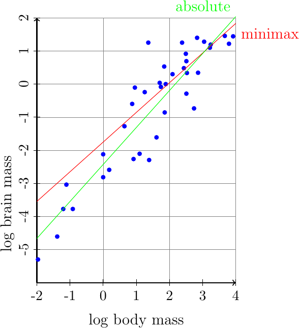
Considering, as an example, absolute regression, the solution in this case turns out to be \(a = 1.11686, b = -2.42759\) and, thus, the model is
or
which is plotted in the following figure:
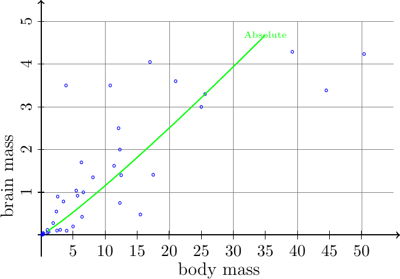
Although not totally evident from the figure, the regression represented above is a non linear one.
13.4. Rational Objectives¶
In some applications the criterion to be minimized (or maximized) is given by the ratio between two linear or two affine functions:
In what follows, for simplicity, we will analyze the case \(a=b=0\), i.e., the ratio of linear functions. The extension to the general case is straightforward.
In this context special care has to be taken to avoid that, within the feasible set, a solution exists in which the denominator is zero. Frequently it is assumed that the denominator has a constant sign (usually positive). When it is not a priori known whether the sign of the denominator is constant, a simple auxiliary optimization problem might be solved:
If the optimal solution value of this problem is positive, than we can conclude that the denominator is positive in the feasible set; if it is zero, the problem cannot be solved, as there exists a feasible solution with zero denominator in the objective function. If this optimal value is negative, by solving a similar, maximization, problem we might check whether the sign of the denominator is always negative.
In what follows we will assume a positive denominator. Although this problem is not linear, it enjoys a so-called hidden convexity property (see [Locatelli and Schoen, 2013]). Thanks to a transformation suggested by Charnes and Cooper in 1978 [Charnes et al., 1978] we can, under suitable assumptions, transform it into an equivalent linear optimization one.
The objective function, being a fraction, will not change if we multiply both the numerator and the denominator by the same non zero quantity \(\var{q}\):
The variable quantity \(\var{q}\) can always be chosen in such a way as to make the denominator equal to 1:
Thanks to the assumption on the sign of the denominator, variable \(\var{q}\) will be strictly positive. Thus, it is safe to multiply both sides of each constraint in the model by \(\var{q}\):
This model is still a non linear one, with bi-linear terms (products of two variables) appearing in many parts. We recall that, in general, bi-linear optimization is a very hard optimization problem. However, in this special case, the main variable of the original problem is everywhere multiplied by \(\var{q}\), so that we can make a change of variable:
and the model becomes a linear one:
This is a linear problem in the variables \(\var{y} \in \R^n\) and \(\var{q}\in\R\) . It can be proven (see, for example, [Bazaraa et al., 1993]), that if the feasible set is limited (that is, if it is possible to limit from above and below all variables) then in an optimal solution to this linear optimization problem the variable \(\var{q}\) will be nonzero. Once the linear problem is solved it will be possible to recover the optimal solution of the original problem through the substitution \(\var{x}_j = \var{y}_j / \var{q}\).
Problems of this kind arise in several contexts, from economics to telecommunications. As a simple example we might consider production planning problems in which, instead of minimizing the cost we minimize the unit cost per product, i.e., the ratio between total cost and total quantity produced. But the best known application of this fractional optimization problem is related to efficiency evaluation, and is the subject of the next section.
13.4.1. Comparative efficiency evaluation¶
We momentarily abandon the optimization framework to describe a very important managerial problem. Eventually we will see how this is turned into an optimization problem which fits the rational objective function model just presented.
Consider the situation in which several “units” have to be compared in terms of “efficiency”. Units might be production plants, different wards in hospitals, research departments, … The task is to compare these units in order to put into evidence those which are, in a sense to be made more precise, inefficient in comparison to the other ones. It is thus a peer-to-peer efficiency evaluation, in which we are not certifying absolute efficiency but just relative inefficiency. Consider, as a pedagogical example, the following data concerning some healthcare-related statistics in some regions:
set INPUTS:=
Doctors # per 100k
beds # beds per 100K ab
;
set OUTPUTS :=
HomeAss # home assistance cases per 100K ab
Patients # per doctor
recipes # recipes issued per 1000 ab
;
set UNITS := U01 U02 U03 U04 U05 U06 U07 U08 U09 U10
U11 U12 U13 U14 U15 U16 U17 U18 U19 U20 U21 ;
param iodata:
Doctors Patients HomeAss beds recipes:=
U01 72 1227 778 806 99
U02 73 1202 170 141 88
U03 66 1322 924 840 81
U04 54 1565 145 833 61
U05 68 1262 971 988 82
U06 67 1299 1418 902 83
U07 77 1139 2175 799 87
U08 77 1157 1171 569 104
U09 70 1252 2828 651 96
U10 75 1169 2812 486 103
U11 83 1053 1222 474 12
U12 76 1152 850 333 11
U13 81 1071 1101 189 109
U14 84 1047 1371 210 119
U15 86 1032 960 80 105
U16 75 1135 634 68 10
U17 80 1091 565 228 111
U18 87 1015 157 98 112
U19 82 1065 692 173 119
U20 82 1054 951 82 114
U21 78 1142 714 113 114
;
As we can see, each unit (here corresponding to a geographical region in Italy) is represented through a set of statistics. In the example the available data is partitioned into some inputs (the number of available medicine doctors, the number of available beds) and outputs (number of home care assistance events, number of patients per medicine doctor, number of recipes issued). All these data is referred to a standard population in order to make the data less sensitive to the size of each region. Please take into account that the aim of this example is purely illustrative, by no means it is intended as a realistic comparison, even if data has been obtained from official statistics. The choice of the sets of inputs and outputs in this example is quite arbitrary and does not consider many aspects which should be taken into account in a realistic scenario.
Inputs are associated to resources, while outputs are, in a sense, “products”. As a general rule, inputs are performance parameters that, in order to be labeled as efficient, we would like to keep as low as possible. On the other hand, outputs are production measurements and, as such, we would like to have these as large as possible. It might be quite questionable to associate the label output to the number of recipes: it might very well be the case that an efficient healthcare system issues less recipes than an inefficient one! Sometimes there might be some ambiguity in this classification and, in fact, in some applications the same element is considered both as an input and as an output. An example of this situation might be,e.g., the yearly budget: it surely is a resource, but it can be also a product, as in a competitive environment being able to get a large budget is a result of efficiency.
A comparison among the different units might be very easy when there is a single input and a single output. In such a case a reasonable efficiency measure would be the ratio between the output and the input. From this ratio a ranking might be generated, the most efficient units being those for which the output / input ratio is maximum. This ratio represents the total production per unit resource. If we applied this criterion to the health care data above, considering just the number of home assistance cases and the number of medicine doctors, unit U09 would result as the most efficient one, with a ratio of more than 40, as opposed to, say, units U18 with 1.80 cases per doctor or U02 with 2.3.
It is clear however that this single ratio cannot capture the multi-objective nature of the comparison. Units are different and, while one might excel in home care, another one might be instead specialized in a different kind of “output”, and a comparison based simply on home care would be too penalizing and, in the end, unfair.
When, as is usually the case, every unit is characterized by a number of different input and output data, a possibility for the efficiency index would be to define a suitable ratio between a linear combination of the outputs and a linear combination of the inputs. Let
the input and output levels of unit \(u\). An efficiency index can be defined for this unit by choosing the weights \(\mathvar{\pi}\) and \(\mathvar{\lambda}\) to form a linear combination of the inputs and the outputs respectively:
As it is emphasized in the above definition, the efficiency index is a function of the coefficients used to weight both inputs and outputs. The problem of choosing the weights is indeed a complex one, as every choice leads to differences in treatment of one unit with respect to others.
An interesting possibility, introduced by Charnes and Cooper and known under the name of Data Envelopment Analysis (DEA), consists in letting every unit choose the most convenient coefficients. That is, every unit in turn is asked to decide the weights; of course each unit will try to choose the coefficients which maximimize its own index. However, with the same weights, all the other units need also to be evaluated and their efficiency score computed. If, even with this freedom of choice, a unit cannot find a set of weights which allows it to excel over all the others, than that unit will be labeled as inefficient.
As all efficiency indices are given as a ratio of linear combinations of inputs and outputs, we can always constraint the resulting fraction to be bounded above by 1 (which corresponds to 100% efficiency). By introducing a constraint that limits all output/input ratios to the range \([0,1]\) we will define as “inefficient” a unit that cannot decide a set of weights which let it reach its output/input ratio 1 while keeping limited by 1 the indices of all the remaining units, evaluated with the same weight factors.
From a modeling point of view, the evaluation of the most convenient index for each unit \(u\) corresponds to the solution of a set of optimization problems, one for each unit, of the form:
The objective is to maximize the efficiency indicator for unit \(u\), with the constraints preventing the efficiency indices of other units to exceed 100%.
This non linear problem can be easily transformed into an equivalent linear one, as we have seen previously. First, the denominator has positive sign, being a non negative combination of positive numbers. Actually the denominator might be zero, when the coefficients of the non zero inputs of the current unit are chosen to be zero. If this might happen, a small positive constant might be added to the lower bound on each variable. The transformation of this problem as an equivalent linear one can be easily obtained. Here not only the objective is fractional, but also the constraints. However, it is trivial to transform the constraints into linear equivalent ones, multiplying both sides by the denominator. Following the transformation given previously, we reduce the problem into one of maximizing the output indicator of the current unit, subject to a normalization constraint on its input index:
It can be observed that, differently from the general case, the use of the auxiliary variable \(\var{q}\) was not required here, as the right hand sides of all inequalities are zero.
An implementation of this model might be the following:
set INPUTS ordered;
set OUTPUTS ordered;
set IO := INPUTS union OUTPUTS ordered;
set UNITS ordered;
param u symbolic in UNITS;
param iodata{UNITS, IO};
var weight{IO} >= 0;
maximize eff: sum{o in OUTPUTS} weight[o] * iodata[u,o];
s.t. normalization:
sum{i in INPUTS} weight[i]* iodata[u,i] == 1;
s.t. comparison{j in UNITS}:
sum {o in OUTPUTS} weight[o] * iodata[j,o] -
sum {i in INPUTS} weight[i] * iodata[j,i] <= 0;
The model can now be run, looping over all possible units to find the maximal efficiency achievable. An implementation of the commands to run all these optimization and prepare an output statistics is the following:
model dea.mod;
data healthcare.dat;
option solver gurobi;
for {unit in UNITS} {
# chose one unit to optimize
let u := unit;
solve;
printf "==========================================================\n";
printf "Unit %s eff: %f\n",u,eff;
printf "positive weights:\t";
for {io in IO : weight[io] > 1.e-7}{
printf "%s: %f\t",io,weight[io];
};
printf "\n Peer Comparison:\n";
for {ui in UNITS}{
printf "%s: %f\t",ui, (sum {o in OUTPUTS} weight[o] * iodata[ui,o]) /
(sum {i in INPUTS} weight[i] * iodata[ui,i]);
};
printf "\n Competitors (Dual weights):\n";
for {ui in UNITS: comparison.body[ui] > -1.e-7}{
printf "%s: %f\t",ui,comparison[ui];
};
printf "\n";
};
and, with the data presented before, a portion of the generated output is the following:
Gurobi 9.1.1: optimal solution; objective 0.9835582016
6 simplex iterations
==========================================================
Unit U01 eff: 0.983558
positive weights: Doctors: 0.013889 HomeAss: 0.000004
Patients: 0.000179 recipes: 0.007683
Peer Comparison:
U01: 0.983558 U02: 0.880186 U03: 0.941254 U04: 1.000000
U05: 0.910482 U06: 0.941156 U07: 0.823319 U08: 0.945165
U09: 1.000000 U10: 0.970616 U11: 0.247614 U12: 0.278727
U13: 0.918704 U14: 0.948876 U15: 0.833285 U16: 0.271407
U17: 0.945546 U18: 0.863351 U19: 0.972753 U20: 0.938090
U21: 1.000000
Competitors (Dual weights):
U04: 0.217976 U09: 0.094137 U21: 0.672511
Gurobi 9.1.1: optimal solution; objective 1
3 simplex iterations
==========================================================
Unit U02 eff: 1.000000
positive weights: Doctors: 0.012208
beds: 0.000772 Patients: 0.000832
Peer Comparison:
U01: 0.680119 U02: 1.000000 U03: 0.756473 U04: 1.000000
U05: 0.659284 U06: 0.713830 U07: 0.608773 U08: 0.697973
U09: 0.767632 U10: 0.753548 U11: 0.635259 U12: 0.808933
U13: 0.785240 U14: 0.733495 U15: 0.772345 U16: 0.975385
U17: 0.787492 U18: 0.742198 U19: 0.780936 U20: 0.823857
U21: 0.914037
Competitors (Dual weights):
U02: 1.000000 U04: 0.000000
Gurobi 9.1.1: optimal solution; objective 0.9412539207
5 simplex iterations
==========================================================
Unit U03 eff: 0.941254
positive weights: Doctors: 0.015152 HomeAss: 0.000004
Patients: 0.000196 recipes: 0.008382
Peer Comparison:
It can be seen that with these data, the following maximal efficiency can be obtained (in the table we report the optimal weights found by each unit):
From the result above, it can be seen that a few units are labeled as not efficient. As an example, unit U11 has an efficiency score of only 0.719. This means that with the best possible choice of weights, this unit cannot reach higher efficiency score, as other units, which we call competitors, reach their maximum index 1 with that choice. For unit U11 the competitors, i.e. those units which display 100% efficiency when evaluated with the weights which are the most convenient for U11, turn out to be: U04, U09, U16. From weights values we can observe the relative importance of inputs and outputs. Of course, as the efficiency index is a ratio of linear expressions, it does not change multiplying every weight by a positive constant. Thus it is more appropriate to consider relative weights (ratios between two weights).
This comparative efficiency model is the simplest one; there exist many variations of the basic model which can give different evaluations. The model above prescribes maximizing the output/input ratio. It is easy to write a model in which instead, we minimize the input/output ratio; perhaps quite surprisingly, this input-oriented model can produce different efficiency rankings. In all models, further constraints might be introduced to limit the choice of weights. It is possible, in fact, to prescribe that some weights are larger than others, to reflect the relative importance of different input and output categories). Some extensions try to take into account scale economies or diseconomies by introducing some non linearity, useful when comparing units of very different sizes. We refer to the very abundant literature on this subject for further details.
13.4.1.1. Dual of the efficiency evaluation model¶
It is not difficult, yet quite interesting, to analyze the dual of the linear efficiency optimization model. In order to obtain a dual representation, let us first slightly reformulate the problem:
In order to formulate the dual, we observe that this problem has two groups of constraints: a single normalization constraint for the current unit and a group of normalization constraints, one for each unit. Let us associate a single dual variable \(\mathvar{\theta}\) to the normalization constraint of the current unit, and the set of dual variables \(\mathvar{\lambda}_s\) for the second group. The constraints in the dual will be associated to the two groups of primal variables: the input weights and the output weights. Following the standard dual transformation for linear problems, we get:
For convenience, let us substitute each variable with the opposite one. We obtain:
From duality theory we know that the optimum of this problem will be equal to that of the primal and will always be between 0 and 1. Even without using duality, it is easy to see that the optimal value of \(\mathvar{\theta}\) cannot exceed 1, since a feasible solution of value 1 can always be found by choosing \(\mathvar{\lambda}_{u}=1\) and all other components of \(\mathvar{\lambda}\) to zero.
The dual model lends itself to an important interpretation. From the left hand side of the constraints we see that, for every input or output, a linear combination of units is composed. We may think that we are building a “virtual” unit, not existing in real life, obtained by combining with non negative coefficients the data of the available units. If, besides the request of non negativity, we added a normalization constraint asking for the weights to sum to 1 at most, then this operation would lead to the convex envelop (or convex combination) of all units in the input/output feature space. From this geometrical interpretation, the efficiency evaluation model gets the name “Data Envelopment Analysis” or DEA. However we do not require the normalization constraint.
This virtual unit composed of a mixture of real ones, including the one we are currently evaluating, \(u\), for a generic output feature \(i\), has a virtual output equal to
The associated constraint asks for this virtual output to be at least as good as the real one, \(\param{O}_i^{u}\). Notice that, within the units which can be used in order to form the virtual one, there is also unit \(u\). Thus it is very easy to satisfy these constraints. However, the analogous constraint on the virtual value associated to inputs has a right hand side which is \(\param{I}_i^{u} \mathvar{\theta}\). Thus, choosing \(\mathvar{\theta} =1\), which is a feasible choice, we always can satisfy all of the constraints. However, thanks to the objective function, we are interested in checking whether a linear combination of the units, different from the trivial one, exists which allows to obtain a value \(\mathvar{\theta} <1\). If this is possible, then the current unit will be labeled as not efficient, as there exists a virtual unit (a unit in the envelop of the others) which produces at least as much output but with strictly less resources (no more than \(\mathvar{\theta}\) times the resources of \(u\)).
Thus this dual model allows us to see the efficiency evaluation problem from a different, complementary, point of view: if and only if a unit is inefficient, we can find a set of competitors which, suitably combined, can produce enough output with lower input levels. These are the units from which the inefficient one should learn how to improve. They are a benchmark for this unit.
In the example, looking at the dual values when optimizing the index of unit U11, we obtain the weights:
U04: 0.113482
U09: 0.336625
U16: 0.399953
Multiplying the input and output data by these coefficients we find that the virtual unit has the following virtual data (in parentheses the corresponding data for unit U11):
Patients 1053 (1053)
HomeAss 1222 (1222)
recipes 43.24 (12)
Doctors 59.69 (83)
beds 340.87 (474)
from which it can be seen that the virtual unit produces at least as much as unit 11, but with less than 71.9% resources. Thus, this can be considered as a proof of inefficiency.
We can also observe that, thanks to complementarity, the units which will enter this virtual unit are units with efficiency score equal to 1. And, following the same line of reasoning, the outputs for which the virtual unit produces strictly more than the currently evaluated one, are weighted as zero in the primal efficiency optimization model. And, similarly, the inputs which are required in a fraction which is strictly smaller than \(\mathvar{\theta}\) have a zero weight in the primal problem. In the example, the weights for unit U11 are:
weights:
Patients: 0.000582
HomeAss: 0.000087
recipes: 0
Doctors: 0.009073
beds: 0.000521
and of course a similar reasoning can be extended to all other units.

© Fabio Schoen 2024